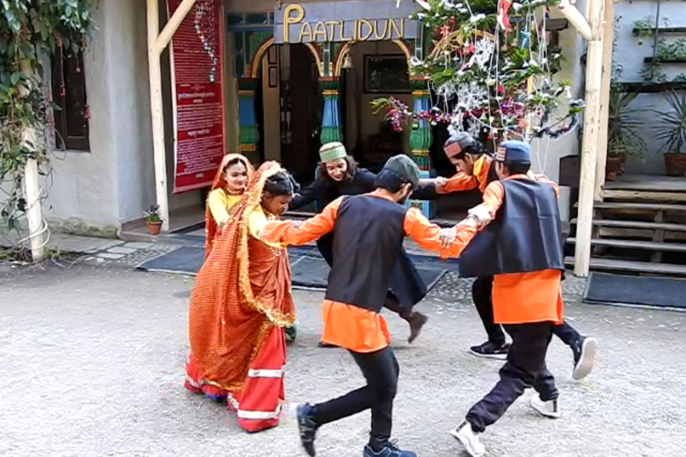
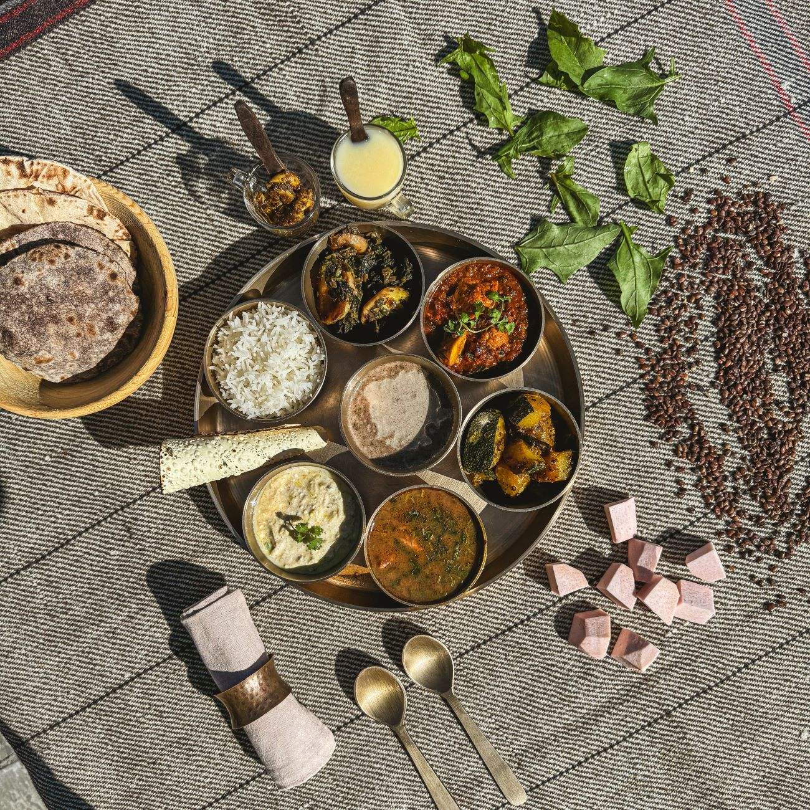

JIM CORBETT NATIONAL PARK
Uttarakhand
Best Time To Visit
OCT-FEB
Peak Season
JUN-SEP
Moderate Season
MAR-MAY
Off-Season
Languages Spoken : Kumaoni ,Hindi ,English
Region : Northern India

Culture & Cuisine
Jim Corbett isn’t just a nature destination—it’s surrounded by the rich culture of Kumaon. Villages near the park like Ramnagar and Kaladhungi reflect the rustic charm and simplicity of the locals, with mud houses, terraced fields, and folk traditions passed down for generations. The legacy of the legendary hunter and conservationist Jim Corbett is still strong here, especially at the museum dedicated to his life and work.
When it comes to food, the region offers hearty and earthy flavors. Try local specialties like Bhatt ki Churkani (a black soybean curry), Aloo Ke Gutke (spiced potatoes), and Mandua roti. Seasonal green vegetables, local pulses, and wood-smoked cooking give Kumaoni food its distinct taste. Wash it down with a glass of Buransh juice (made from rhododendron flowers) or sip on hot chai as the forest hums in the background.

How to get there?
Reaching Jim Corbett is easy and scenic, with multiple travel options depending on your starting point and comfort.

BY AIR
The nearest airport is Pantnagar Airport (approx. 80 km), with regular flights from Delhi. Taxis are available to Corbett from the airport.

BY TRAIN
Ramnagar Railway Station is just 12 km from the park and well-connected to Delhi and other North Indian cities. It’s the most convenient entry point.

BY CAR
Jim Corbett is around 240 km from Delhi, and the drive takes 5–6 hours. Regular buses and taxis are available from Delhi, Nainital, and Haldwani.